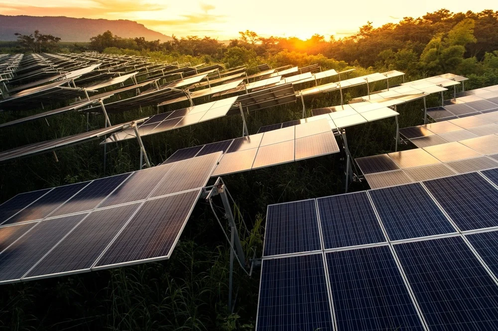

What is renewable energy
Renewable energy, often referred to as clean energy, comes from natural sources or processes that are constantly replenished. For example, sunlight or wind keep shining and blowing, even if their availability depends on time and weather. While renewable energy is often thought of as a new technology, harnessing nature’s power has long been used for heating, transportation, lighting, and more.
Non-renewable, or “dirty,” energy includes fossil fuels such as oil, gas, and coal. Non-renewable sources of energy are only available in limited amounts and take a long time to replenish. When we pump gas at the station, we’re using a finite resource refined from crude oil that’s been around since prehistoric times. Non-renewable energy sources are also typically found in specific parts of the world, making them more plentiful in some nations than others. By contrast, every country has access to sunshine and wind. Prioritizing non-renewable energy can also improve national security by reducing a country’s reliance on exports from fossil fuel–rich nations.
